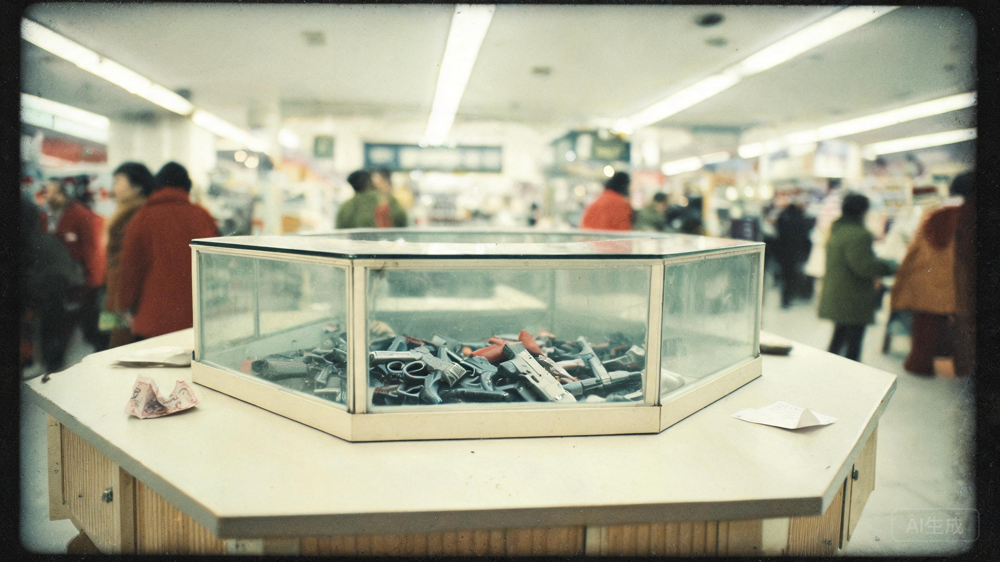

人民商场 · 一楼玩具柜 · 1998年10月7日 19:47
“他用一张假钞，买了一把假枪。”

人民商场八角柜台最后一天。营业员只记得那个男人一直在抖。
本报讯 10月7日晚19时47分，人民商场一楼玩具柜。一名穿蓝色工装的中年男子购买塑料手枪一把，售价三元五角。他递上一张拾元券，营业员发现是假钞。
“他没有跑。”营业员刘玉兰说，“他说‘对不起’，把枪放下，又拿起来。手一直在抖。我让他走了。”
商场第二天就要拆掉八角柜台。那天的收银小票，刘玉兰留了一张存根。小票背面用圆珠笔写了三个字：“可怜人。”
警方后来查到，该男子是第四制药厂仓库保管员陈卫东。当晚，他没再回家。
那把塑料手枪，枪管里是空的。塑料枪身上印着一行小字：MADE IN SHIJIAZHUANG。
假钞的冠字号码是 GB 4071 1007。纸很薄，对着灯能看见一个人用圆珠笔描出来的头像，描得很拙，像是在给谁画遗像。
背面有一行铅笔字，被反复擦过，又反复写上去：“老郑，还素芬。”下面是一个更小的编号：Y-17。
灯下能看见假钞的水印。那不是人头，是一匹马的轮廓。马的四条腿都被画得很长，像要跑出纸面。
铅笔字下面还有一行更淡的字：“今晚22点。别让他们锁门。”
这句话不是写给营业员的。它本来应该被交到某个人的手里。
假钞是假的，枪也是假的。一个用假钞买假枪的人，不像是去抢钱。他像是想让自己看起来有一样能吓住人的东西。
“老郑，还素芬。”老郑是郑国华，厂长，也是“安宁”临床观察小组的组长。素芬是他的妻子，李素芬。
商场离药厂两站路。从八角柜台到三号冷库，步行需要二十七分钟。19:47 出发，22:00 之前，他来得及。